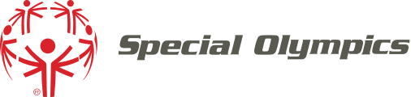
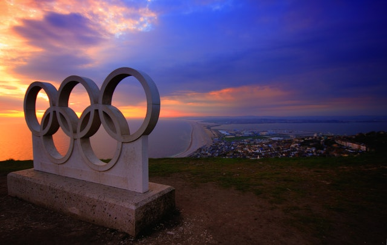
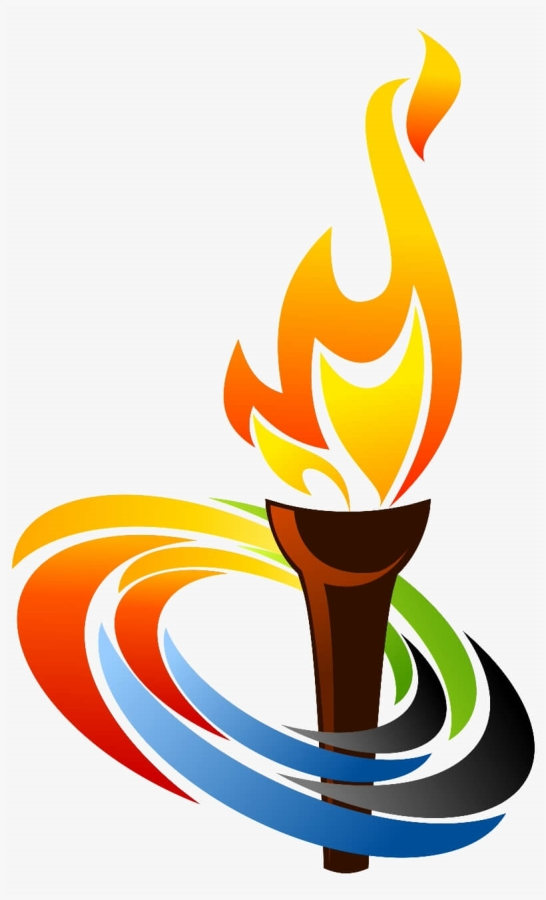
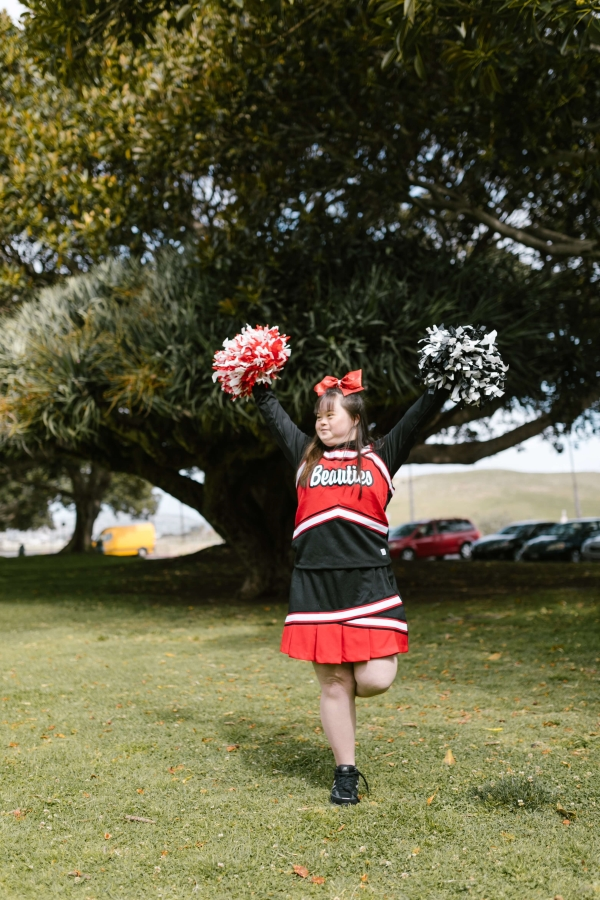
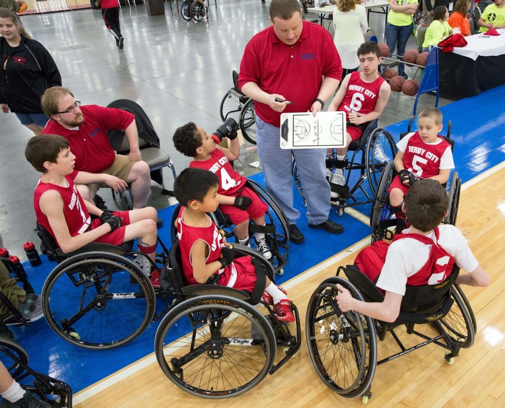

Overview
Purpose
There are many stereotypes that are rampant in our society concerning individuals that have special needs that can hinder their desire to be outgoing and to try new things. I will be creating a website that will have helpful information about opportunities for everyone to learn about what the Special Olympics are, when they started and how anyone can sign up to participate as an athlete, volunteer, or a coach for the many events.
Audience
Our intended audience is for anyone who would be able to participate in the special olympics as a participant or coach. We also intend on reaching people who are unaware of what the special olympics are and how they can help bulid communities.
Branding
Website Logo
Style Guide
Color Palette
Palette URL:
https://coolors.co/003459-007ea7-00a8e8-ffffff| Primary | Secondary | Accent 1 | Accent 2 |
|---|---|---|---|
| [#0a2463ff] | [#009fb7ff] | [#8791b1] |
Typography
Heading Font: Rock Salt
Paragraph Font: Roboto
Normal paragraph example
The Special Olympics provides year-round sports training and athletic competition in a variety of Olympic-type sports for children and adults with intellectual disabilities, giving them continuing opportunities to develop physical fitness, demonstrate courage, experience joy and participate in a sharing of gifts, skills and friendship with their families, other Special Olympics athletes and the community.
Colored paragraph example
The Special Olympics mission remains as vital today as it did when the movement was founded in 1968. Special Olympics strives to create a better world by fostering the acceptance and inclusion of all people.
Navigation
Site Map
Content
Home page
There are many stereotypes that are rampant in society concerning individuals that have special needs that can hinder their desire to be outgoing and to try new things. This site is here to provide helpful information about opportunities for everyone to learn about what the Special Olympics are, when they started and how anyone can sign up to participate as an athlete, as a volunteer, or as a coach for the many events involved. The Special Olympics provides year-round sports training and athletic competition in a variety of Olympic-type sports for children and adults with intellectual disabilities, giving them continuing opportunities to develop physical fitness, demonstrate courage, experience joy and participate in a sharing of gifts, skills and friendship with their families, other Special Olympics athletes and the community. Special Olympics supports over 5 million athletes, 1 million coaches and volunteers, more than 100,000 competitions each year, and 32 Olympic-type sports through programs in more than 170 countries. The sports range widely from alpine skiing and badminton to power lifting and volleyball!
Images for the Home page
 About The Games
The Special Olympics mission remains as vital today as it did when the movement was founded in 1968. Special Olympics strives to create a better world by fostering the acceptance and inclusion of all people. There are as many as 200 million people with intellectual disabilities around the world. Our goal is to reach out to every one of them—and their families as well. Special Olympics does this through a wide range of trainings, competitions, health screenings and fund-raising events. We also create opportunities for families, community members, local leaders, businesses, law enforcement, celebrities, dignitaries and others to band together to change attitudes and support athletes. Team sports bring people together. Special Olympics Unified Sports® teams do that, too and much more. About 1.4 million people worldwide take part in Unified Sports, breaking down stereotypes about people with intellectual disabilities in a really fun way. ESPN has served as the Global Presenting Sponsor of Special Olympics Unified Sports since 2013, supporting the growth and expansion of this program that empowers individuals with and without intellectual disabilities to engage through the power of sports. Special Olympics events are dedicated to promoting social inclusion through shared sports training and competition experiences. Unified Sports joins people with and without intellectual disabilities on the same team. It was inspired by a simple principle: training together and playing together is a quick path to friendship and understanding.
Images for the Page 2

Volunteer opportunities
Volunteers are all ages and their commitments can range from an afternoon to a lifetime. From China to the United States, Ghana to Singapore, Australia to Paraguay, Ireland to India, Special Olympic volunteers are helping to bring out the champion in every Special Olympics athlete. Special Olympics would not exist today—and could not have been created—without the time, energy, commitment and enthusiasm of our volunteers. We owe so much to these millions of people who find the time to make the world a better place. If you want to be a volunteer, get in touch with Special Olympics near you. Link to https://www.specialolympics.org/programs A Special Olympics event is about transforming lives, including your own. It’s about a spirit of giving and teamwork. It's about making your community and neighborhood a more welcoming and accepting place for people of all abilities. It’s also about creating lifelong friendships and finding a new way of thinking about others. Volunteers include the local coach who works with athletes many times a week. Or the people who help organize and plan our World Games every two years. Or the photographers who take the most amazing pictures of our athletes in action. All around the world, Special Olympics training, competitions and other events are happening 365 days a year. There is always something interesting to do!
Images for the Page 3

Wireframes
Create three wireframes for your site. One for each page and list them here
Home
Rough version of the home page. The blue line showed up here for some reason, however it is not part of the wireframe or final product.
About The Games
Rough wireframe for the page about the Special Olympics and when they started. The bottom two buttons will be changed and finalized later.
Volunteer Opportunities
Rough wireframe of the volunteering opportunities page.